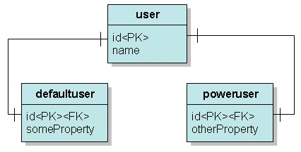

|
接續 上一個主題
，在使用Table per class
hierarchy映射繼承關係時，會有大量的欄位有NULL的情況，好處是使用一個表格，查詢時只需一次SQL。 Table per subclass的繼承映射方式，給予父類與子類分別的表格，而父類與子類對應的表格透過外鍵來產生關聯，具體的說，User類別、 DefaultUser類別與PowerUser類別所映射的表格如下：  其中user表格的id與defaultuser及poweruser的id 一致，具體的說，在儲存DefaultUser實例時，id與name屬性記錄在user表格中，而someProperty記錄在 defaultuser中，假設user表格的id值為1，則defaultuser表格對應的該筆記錄其id值也會為一。 可以使用以下的SQL建立資料表： create table T_Defaultuser (
id bigint not null, someProperty varchar(255), primary key (id) ) create table T_Poweruser ( id bigint not null, otherProperty varchar(255), primary key (id) ) create table T_USER ( id bigint not null auto_increment, name varchar(255), primary key (id) ) alter table T_Defaultuser add index id (id), add constraint id foreign key (id) references T_USER (id) alter table T_Poweruser add index id (id), add constraint id foreign key (id) references T_USER (id) 在映射文件上，如下定義：
<?xml version="1.0" encoding="utf-8"?> <joined-subclass>指明了子類別與所對應的表格，<key column>指明子類別的對應表格中，哪一個欄位要與父類別的主鍵一致，來看Hibernate儲存時的例子： Hibernate:
insert into T_USER (name) values (?) Hibernate: insert into T_Poweruser (otherProperty, id) values (?, ?) Hibernate: insert into T_USER (name) values (?) Hibernate: insert into T_Defaultuser (someProperty, id) values (?, ?) 來看Hibernate查詢時的例子： Hibernate:
select user0_.id as id0_, user0_.name as name0_, user0_1_.someProperty as someProp2_1_, user0_2_.otherProperty as otherPro2_2_, case when user0_1_.id is not null then 1 when user0_2_.id is not null then 2 when user0_.id is not null then 0 end as clazz_ from T_USER user0_ left outer join T_Defaultuser user0_1_ on user0_.id=user0_1_.id left outer join T_Poweruser user0_2_ on user0_.id=user0_2_.id 使用 繼承 - Table per concrete class 中的儲存程式片段，則查詢表格時可以發現以下的結果：
仔細觀察一下，看看defaultuser與poweruser表格中的id各自是對應於user表格中的哪筆資料。 效能是這個映射類型需要考量的，在複雜的類別繼承下，新增資料必須對多個表格進行，而查詢時，跨越多個表格的join也可能引發效能上的問題。 如果您需要多型查詢，而子類別相對來說有較多新增的屬性，則可以使用這種映射方式。 |